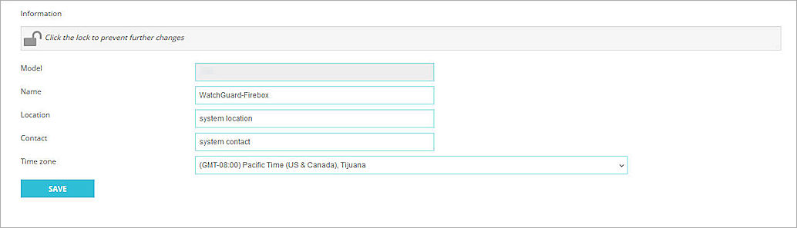

Ubuntu is a Linux distribution that includes various daemons, services, and utilities. One of the available services is Rsyslog, that builds on the features available in Syslog logging. This document describes the steps to integrate Ubuntu Rsyslog logging with your WatchGuard Firebox to view and search your Firebox Syslog messages.
Contents
Integration Summary
The hardware and software used to complete the steps outlined in this document include:
- WatchGuard Firebox device installed with Fireware v12.10.4
- Ubuntu Server 24.04 LTS
- Rsyslog 8.2312.0
Integration Topology
This diagram shows the topology used in the integration of Ubuntu Rsyslog logging with your WatchGuard Firebox.

Before You Begin
Before you begin these procedures, make sure that:
- You have configured a static IP address for your Ubuntu server.
- You have the name of your Firebox.
Configure Static IP Address for Ubuntu Server
Before you configure Rsyslog logging on Ubuntu Server, you must configure a static IP address for the Ubuntu server.
To configure a static IP address for the Ubuntu server:
- Download and install the Ubuntu Server distribution.
For more information, go to the Ubuntu Server documentation. - Configure a static IP address for the Ubuntu server.
For details about how to configure a static IP address, go to Configuring Networks in the Ubuntu Server documentation.
Find the Firebox Name
You need the name of the Firebox when you configure Rsyslog logging on Ubuntu Server in the Configure Rsyslog Logging on Ubuntu Server section.
To find the name of the Firebox, from the Fireware UI:
Select System > Information.
The name of the Firebox appears in the Name text box. Make sure this name is unique to this system and note it for later use.

Configure the Firebox
The Syslog logging output from the WatchGuard Firebox is unencrypted. We recommend that you do not send unencrypted log messages on public networks.
This example uses the internal default trusted IP address of 10.0.1.1 and the Rsyslog server at 10.0.1.2. The configuration steps in this section use Fireware Web UI.
To configure your Firebox:
- Log in to Fireware Web UI at https://<your firebox IP address>:8080.
- Select System > Logging.
The Logging page opens. - Select the Syslog Server tab.
- Select the Send Log Messages to These Syslog Servers check box.
- Click Add.
The Syslog Server dialog box opens.

- In the IP Address text box, type the IP address of your Rsyslog server. It is the static IP address that you configure in the Configure Static IP Address for Ubuntu Server section.
- Keep the default values for the Port and Log Format settings.
You must keep UDP port 514 open to send syslog output through your internal networks.
- To include the date and time in the log message details when an event occurs on the Firebox, select the The Time Stamp check box.
- To include the serial number of the Firebox in the log message details, select the The Serial Number of the Device check box.
- Keep the default values for all other settings.
- Click OK.
- Click Save.
Configure Rsyslog Logging on Ubuntu Server
You can use the Rsyslog service on Ubuntu Server to redirect firewall logs to a single location where you can view and manage them.
To configure Rsyslog logging on Ubuntu Server, after you Configure Static IP Address for Ubuntu Server:
- To verify that Rsyslog is installed, run the rsyslogd -v command:
This is an example of the results:rsyslogd -v
rsyslogd 8.2312.0 (aka 2023.12) compiled with:PLATFORM: x86_64-pc-linux-gnu
PLATFORM: (lsb_release -d):
FEATURE_REGEXP:Yes
GSSAPI Kerberos 5 support: Yes
FEATURE_DEBUG (debug build, slow code): No
32bit Atomic operations supported: Yes
64bit Atomic operations supported: Yes
memory allocator: system default
Runtime Instrumentation (slow code): No
uuid support: Yes
systemd support: Yes
Config file: /etc/rsyslog.conf
PID file: /run/rsyslogd.pid
Number of Bits in RainerScript integers: 64If Rsyslog is not installed, use this command to install it manually:
sudo aptitude install rsyslog
- To create a backup of the original rsyslog.conf file, run this command:
sudo cp /etc/rsyslog.conf /etc/rsyslog.conf.orig - Make the following changes to the /etc/rsyslog.conf file with the VI Editor or your Linux editor.
The module loads the receiver for UDP input. The input tells the server to accept connections on port 514.
|
Change From |
Change To |
|---|---|
| #provides UDP syslog reception | #provides UDP syslog reception |
|
#module(load="imudp") |
module(load="imudp") |
|
#input(type="imudp" port="514") |
input(type="imudp" port="514") |
- To create a folder to redirect your firewall logs to, run this command:
sudo mkdir /var/log/firewall-logs - To allow the Rsyslog service to write to the firewall-logs folder, run this command:
sudo chown syslog:syslog /var/log/firewall-logs - To redirect firewall log messages to the new folder, create a 10-custom.conf file and include it in the /etc/rsyslog.d folder:
- To include more configuration files in the /etc/rsyslog.d folder, run the $IncludeConfig /etc/rsyslog.d/*.conf command.
In the same folder, you might see other files, such as 20-ufw.confand 50-default.conf, with different numeric prefixes. These numeric prefixes determine the order in which files are concatenated. Because the 10-custom.conf file has a lower numeric prefix, it is executed before those other files. - To create the 10-custom.conf file with the VI editor, run this command:
sudo vi /etc/rsyslog.d/10-custom.conf - To redirect the firewall log messages to the new folder and apply the appropriate label, add these lines to the file and save:
if $hostname == 'Firebox Name' then {
/var/log/firewall-logs/Firebox Name.log
~
}The $hostname value must match the Firebox name you found in the Find the Firebox Name section.
The tilde (~) character notifies Rsyslog to drop the log message immediately, before other filters catch those firewall logs. For more firewalls, add more if/then statements to the 10-custom.conf file.
- To include more configuration files in the /etc/rsyslog.d folder, run the $IncludeConfig /etc/rsyslog.d/*.conf command.
- To modify the Rsyslog file under /etc/logrotate.d for automatic maintenance, run this command:
sudo vi /etc/logrotate.d/rsyslog - To allow for log rotation, type this statement at the end:
/var/log/firewall-logs
{rotate 120
daily
missingok
notifempty
delaycompress
compress
postrotate
invoke-rc.d rsyslog rotate > /dev/null
endscript
}Variable Descriptions:
- rotate — Rotate log files the specified number of times before they are removed or mailed to the address specified in a mail directive. If the count is 0, old versions are removed rather than rotated. In this example, log messages are rotated once a day for 120 times.
- daily — Log files are rotated every day.
- missingok — If there is no log file, go on to the next one and do not issue an error message.
- notifempty — Do not rotate the log file if it is empty.
- delaycompress — Postpone compression of the previous log file to the next rotation cycle. This takes effect only when used in combination with compression. It can be used when some programs cannot be told to close their log file and could therefore continue to write to the previous log file for some time.
- compress — Old versions of log files are compressed with gzip(1) by default.
- postrotate / endscript — The lines between postrotate and endscript (both of which must appear on lines by themselves) are executed (with /bin/sh) after the log file is rotated. In this example, log files are redirected to the empty folder of /dev/null after 120 days and deleted. To keep these files, redirect them to a folder for long-term storage.
- To restart the Rsyslog service and implement all the changes, run this command:
sudo service rsyslog restart
Test the Integration
This section describes how to test and troubleshoot the integration.
Troubleshoot Rsyslog Setup
To verify that the Rsyslog service runs, run this command:
$ service rsyslog status
rsyslog.service - System Logging Service
Loaded: loaded (/lib/systemd/system/rsyslog.service; enabled; vendor preset: enabled)
Active: active (running) since Mon 2022-07-11 06:20:13 UTC; 8min ago
TriggeredBy: syslog.socket
Docs: man:rsyslogd(8)
http://www.rsyslog.com/doc/
Main PID: 759 (rsyslogd)
Tasks: 5
(limit: 4612)
Memory: 3.5M
CPU: 16ms
CGroup: /system.slice/rsyslog.service
└─759 /usr/sbin/rsyslogd -n
-iNONE
To verify that UDP port 514 is open, run this command:
netstat -na | grep :514
udp 0 0 0.0.0.0:514 0.0.0.0:*
udp6 0 0 :::514 :::*
To verify that UDP traffic on port 514 is present on the receiving interface, run this command:
sudo tcpdump -c10 port 514
tcpdump: verbose output suppressed, use -v or -vv for full protocol decode
listening on eth0, link-type EN10MB (Ethernet), capture size 262144 bytes
12:31:05.193268 IP 10.55.55.1.37506 > 10.55.55.3.syslog: SYSLOG local3.info, length: 125
Search Rsyslog Output
Use the less pager program to scroll through the log messages. The less pager can scroll forward and backward and provides basic search options.
Use this command to open your log file in less:
less /var/log/firewall-logs/Firebox Name.log
Then use the following keys to search.
Forward search:
- / — Search for a pattern going forward to the next occurrence
- n — Next match forward
- N — Next match in backward direction
Backward search:
- ? — Search for a pattern going backward to the next occurrence
- n — Next match backward
- N — Next match in forward direction
Beginning, end, and exit:
- g — Go to start of file
- G — Go to end of file
- q — Exit the less pager
- ZZ — Exit the less pager
You can also use the Linux grep command to search for character strings, as in the following examples.
- Search for a single user:
grep 'Dave' /var/log/firewall-logs/WatchGuard-Firebox.log - Search for multiple users:
grep -E 'Dave|Mary|Joe' /var/log/firewall-logs/WatchGuard-Firebox.log - Search for an IP address:
grep '10.55.54.66' /var/log/firewall-logs/WatchGuard-Firebox.log - Search for an IP address subnet:
grep -E '10.0.?.?' /var/log/firewall-logs/WatchGuard-Firebox.log - If the grep search output is too big, pipe the output to the less pager to scroll:
grep -E '10.0.?.?' /var/log/firewall-logs/WatchGuard-Firebox.log | less - To search through multiple firewall log files in the folder, use the recursive option:
grep -r 'Unhandled' /var/log/firewall-logs/